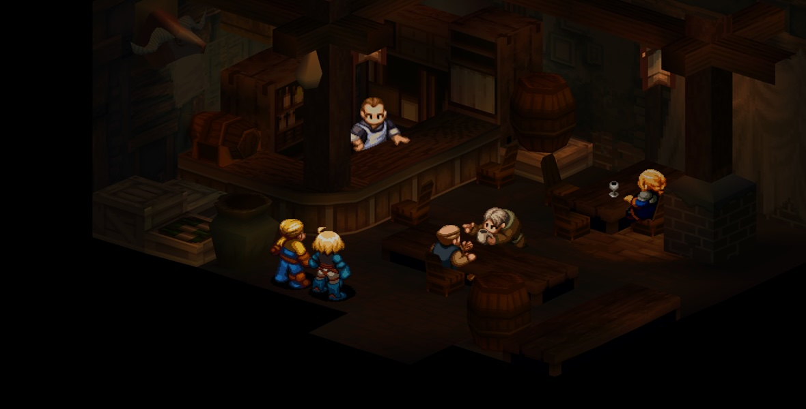

Introduction
Sword in hand, a warrior clutches stone to breast. In sword etched he his fading memories. In stone, his tempered skill. By sword attested, by stone revealed. Their tale can now be told.
Settings
Ivalice is a medieval kingdom suffering the aftereffects of the Fifty Years' War. It is divided along class lines: great noble families, such as House Beoulve, rule over masses of peasants, lords ruling over provinces as their personal fiefs, while the monarchy is weakened by intrigue. The real power in Ivalice is the Church of Glabados, based around the divinity of Saint Ajora Glabados, with its military arm being the Knights Templar. Using manipulation the church is pulling the strings to create disorder in Ivalice and to defeat the secular powers.
Two independent armies, the Order of the Northern Sky led by Prince Larg—brother of Queen Louveria—and the Order of the Southern Sky led by Duke Goltanna, are rival forces. They fight for control of the monarchy, hoping to take control of King Ondoria's child successor to use as a puppet to rule Ivalice. The king has two children, his teenage adopted half-sister, Princess Ovelia, and the young Prince Orinus.
The princess, off in the Orbonne Monastery, is targeted by forces of the Southern Sky's Order. Ramza Beoulve, a sellsword under the greedy Goffard Gaffgarion, is hired to protect her, working with Ovelia's bodyguards, led by Agrias Oaks. The mercenaries and the bodyguards defeat the forces sent by the Northern Sky, but the princess is captured by Delita Heiral, Ramza's childhood friend. When Ramza spots Delita again, he reminisces of the time that led to Delita's disappearance and Ramza's casting off his family name.